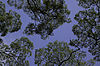

canopy
phenomenon

Source: Wikipedia
Wikipedia Page (Something wrong with this association? Let us know.)
Wikidata Page (Something wrong with this association? Let us know.)
Occurs in:
- land_vegetation_canopy_water_interception__storage_factor
- land_vegetation_canopy_water_evaporation__volume_flux
- atmosphere_bottom_air_canopy__brutsaert_emissivity_factor
- land_vegetation_canopy__area_fraction
- land_vegetation_canopy_water_interception__capacity
- land_vegetation_canopy_water_interception__volume_flux
- land_vegetation_canopy_water_throughfall__volume_flux
- land_vegetation_canopy_water_transpiration__volume_flux
- crop_canopy_water_transpiration__volume_flux
- crop_canopy_radiation~solar_interception__energy_flux_fraction
- land_surface_vegetation_canopy_water__mass-per-area_density
- land_vegetation_canopy_water_evaporation__energy_flux